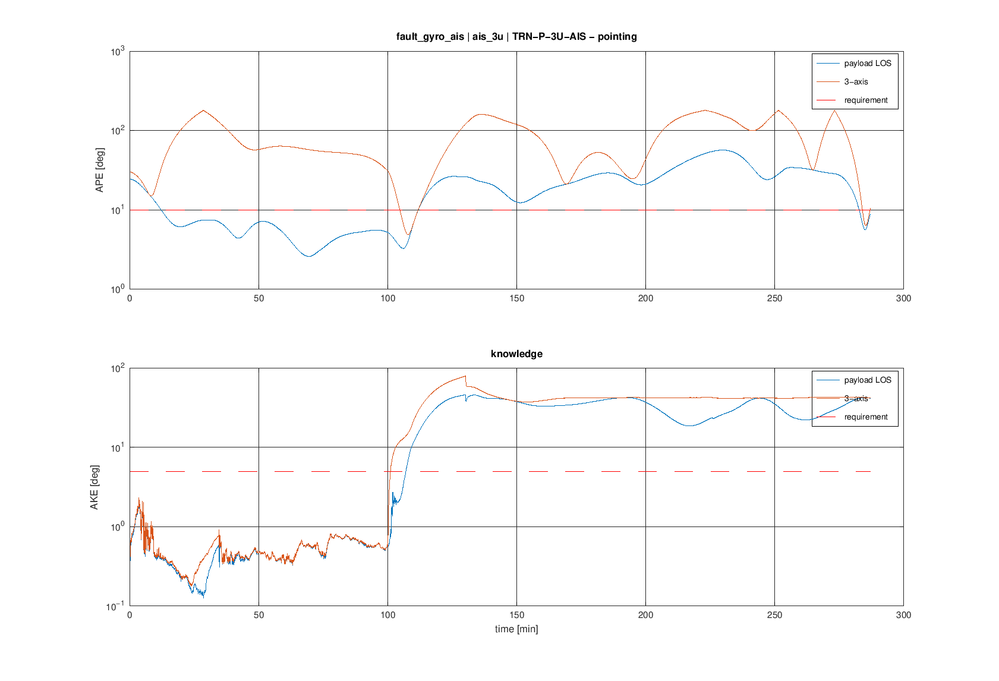
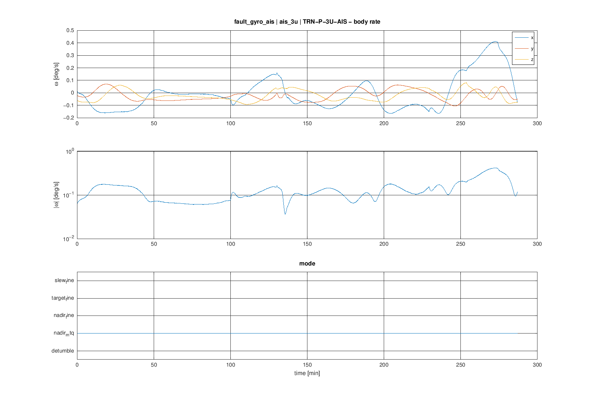
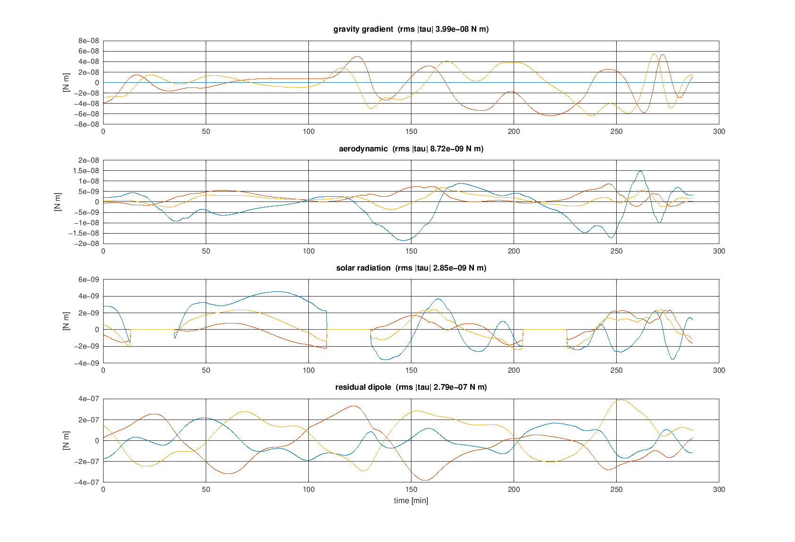
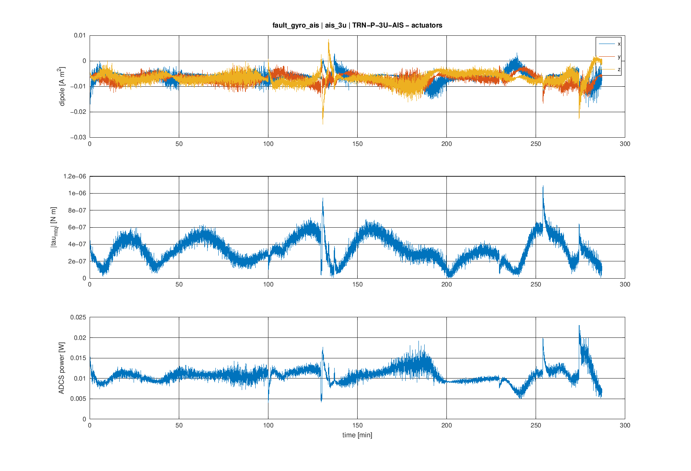
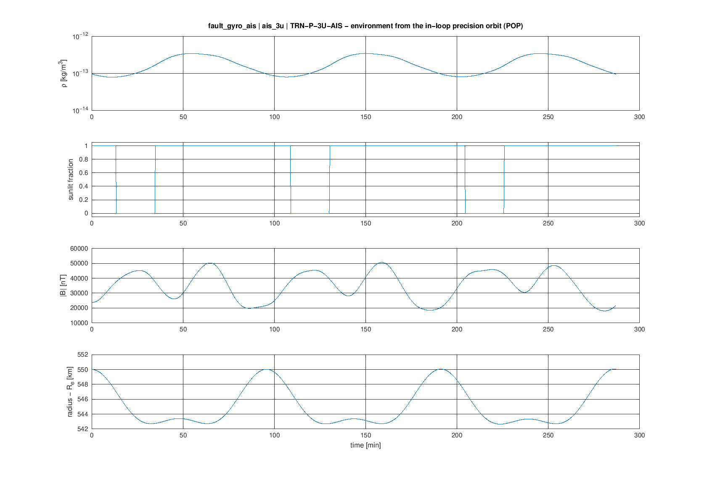
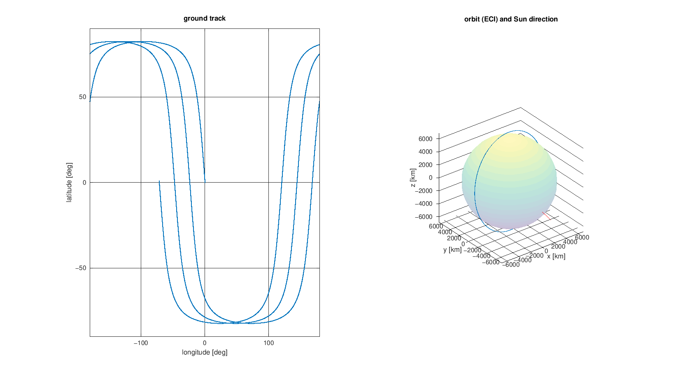

asils-1.0.0 (adcs-case/1, POP v51 in-loop) · case ais_3u (3U AIS satellite — coarse pointing 10 deg, SSO dawn-dusk 550 km) · product TRN-P-3U-AIS · seed 1 · owner: Agastya
| metric | value | required | verdict |
|---|---|---|---|
| ape_3axis_last_orbit | 180 deg | NaN | – |
| ape_los_last_orbit | 56.79 deg | 10 | FAIL |
| ake_los_last_orbit | 42.59 deg | 5 | FAIL |
| power_mean | 0.01077 W | 0.5 | PASS |






Copyright (c) 2026 Agastya. All rights reserved.